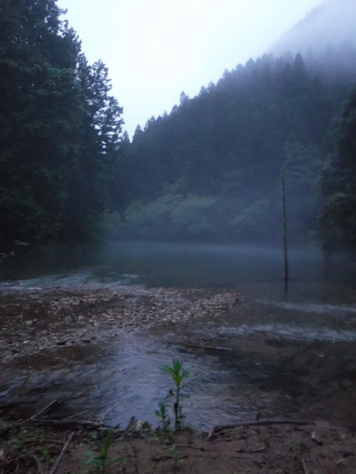
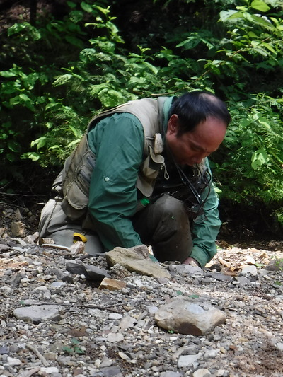
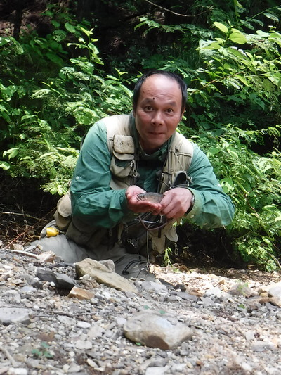
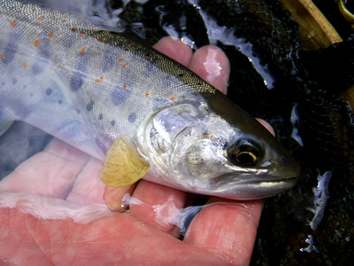

釣行日誌 故郷編
2019/07/28 掌で踊る宝石
しっかりと睡眠薬を飲んで寝たのにもかかわらず真夜中に目が覚めてしまった。それから眠れず、エイヤッと起きだして深夜のドライブとなり、午前２時半にいつもの空き地に着いた。
車中でティペットを結んだり、ラジオ聴いたりして時間をつぶし、４時から身支度をして出撃する。
まだ明けぬ夜道を、懐中電灯とロッドを持ち、デイパックを背負いながら、林道を進んで行く。まるでうずくまったクマのように見える大きな黒い石の影に、ギョッと怯えた。
５時前に流れ込みに着き、あたりを偵察してみる。今日も水量は多く、笹濁りである。まばらではあるが、ライズが有る。

タックルをセットして、ティペットには必殺のグリーンハンピー14番を結んでライズの辺りに放り込むが、なぜか出ない。
早々にドライを諦めて、ニンフとインジケーターへ仕掛けを替える。その後、たまぁにアタリがあるが乗らない。何故か？ スラックが大きかったか？
先週で懲りて、完璧に修理したはずのウェーダーから再び水漏れが始まったようで、つま先がジンジンと冷たい冷たい！
本流の流れ込みをあきらめ、支流の流れ込みへ移動する。ウエーダーに水が入ってしまい、両足が重くて困った。１歩１歩が鉛のようである。ここでクマと出くわしたら一巻のオワリであろう。（笑）
何とか40mほどを移動し終えた。小さな沢の流れ込みから前に歩み出てバックのスペースを作り、苦労して前方遠くを狙う。
夢中でフォルスキャストしていると、すぐそばでライズが起こり、ギョッとさせられる。魚はけっこう動き回っているようだ。
今日もトンガリロ方式で、フライラインに 8ft ほどの5X ティペットを直結し、ビーズヘッドニンフを結び、インジケーターを結わえ付ける。
正面に遠投してようやく１尾を釣り上げた。ガボッとドライに出るのも楽しいが、白いヤーンがシュポッと沈むのも、同じくらいに楽しい。
今日はデジカメでセルフタイマーが使えるので、小型三脚をセットし、初めての自撮りに挑戦する。なにせやったことがないので思うように撮せないが、何とか１枚ものにした。



野生の美しさがあふれる魚体であった。しばし我を忘れて見とれる。しかし、夜明けから11時までやって、この１尾だけである。（笑）
もうじき昼近かったが、朝ご飯はおにぎりとお茶で、ニンマリしながら独りいただく。
左奥の木立の下にライズが今日も見られたので、狙ってみるが出ない。背後の嫌なところに立木があってバックキャストの邪魔をするのがつらい。
２時過ぎに、お昼はパンを２つ食べて済ませた。釣りに夢中でおなかが空かないのだ。昼食後はルアーにチェンジして攻める。連中、追っては来るが喰い付かない。このところ散々攻めたのでスレちゃったかな？
また本流のインレットへと戻り、飛距離の出るラパラのシンキング CD-5 を試す。ちょっと大きめだが、まぁいいだろう。
左岸の急斜面から深みを攻めてみると、何尾か良い型が出るが喰わない。徐々に下流に歩み下りながら、深みの底近くを連続して探ってゆくと、良い型が２尾出てきたが、しっかりとミノーを見切って反転して消えた。あれは25cmはあったな.....と悔しい。
まだ暑い４時頃に納竿とし、林道に上がってビシャビシャのウェーダーを脱ぐ。逆さにすると大量の水が出た。疲れと暑さとで地獄のような帰り道となった。笛を吹きまくり、林道の草むらを掻き分け歩く。いやぁ暑い暑い。
帰り道はさすがに疲れたので、道路脇の空き地に停め、30分ほど仮眠を取った。来週には梅雨も明けるか？
釣行日誌 故郷編 目次へ
サイトマップ
ホームへ
お問い合わせ